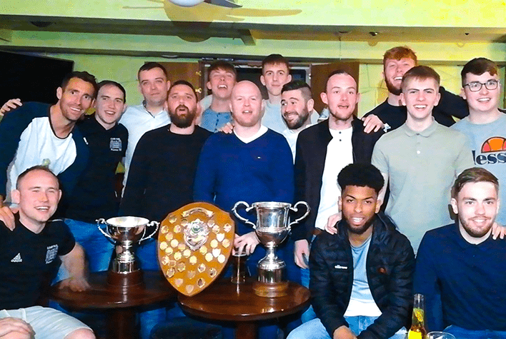
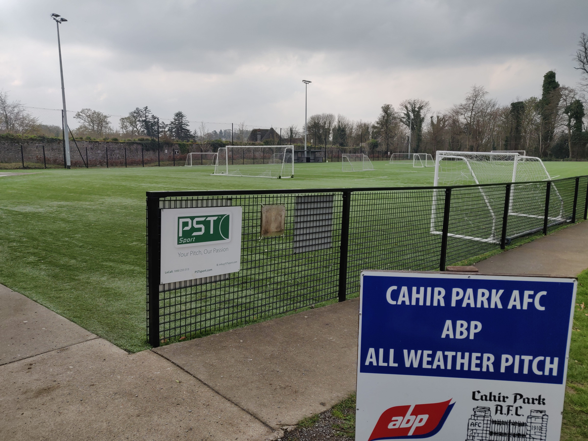

1910
Cahir park is one of the oldest parks in the country. It was established in 1910.
Irelands oldest Junior Football Club promoting soccer in South Tipperary.

1913
In 1913 the club has won is first silver trophie.

2010
The Club celebrated its 100 year anaversury in 2010.
2017
Im 2017 the club was sponsered by Larry GoodMan the owner of the biggest meat factory in ireland abp.
Larry has sponsered the club with over €100,000 to upgrade one of the soccer pitches to an astro pitch.
This was a big Stepping stone for the Club as it began to Rent the all weather pitch to individuals who wanted it per hour.
